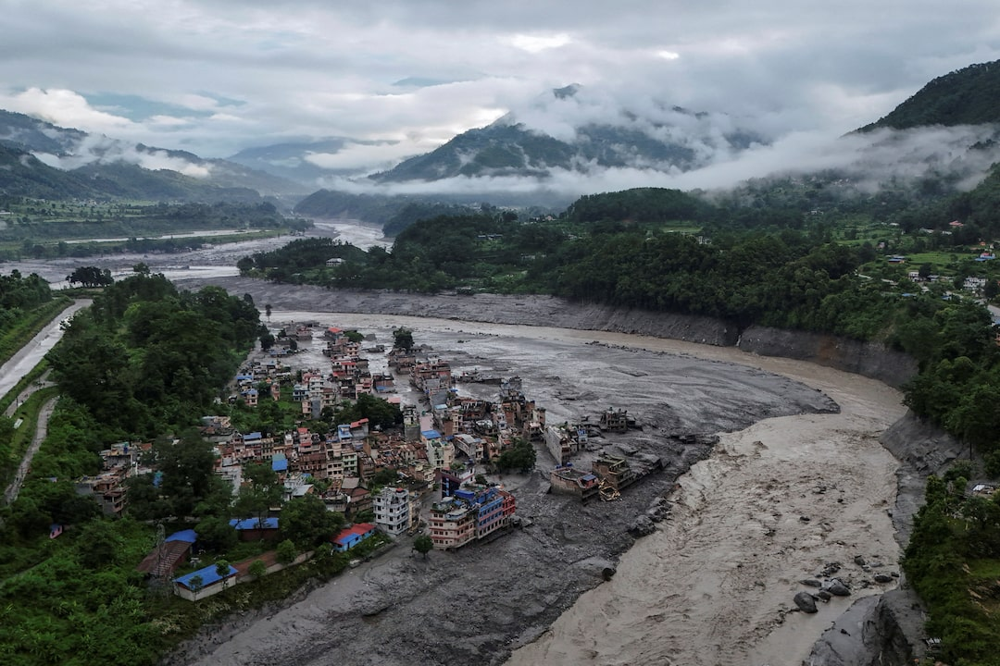
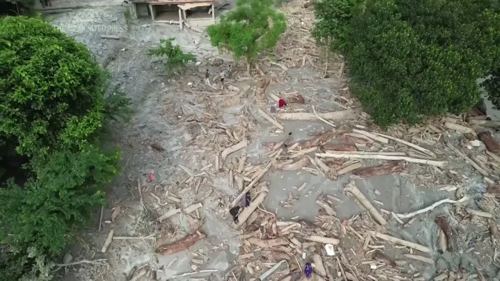
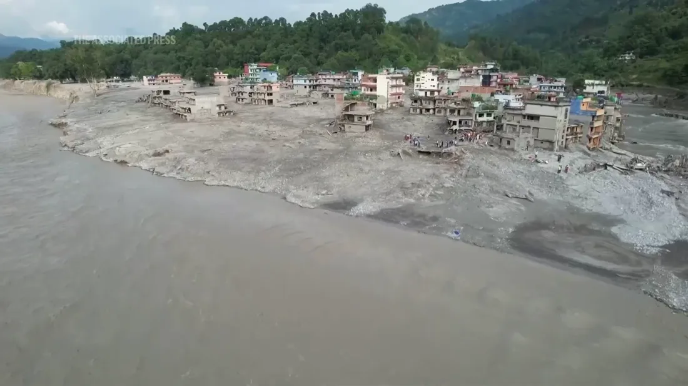
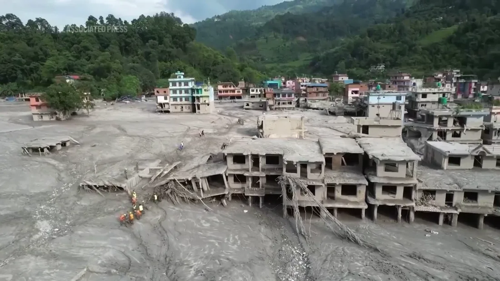

Reported deaths / remains
Recovery tally includes unidentified and partial remains.
NDRRMA / Ministry of Finance · 19 Sep 2026Nepal contributed almost nothing to the climate crisis. Its people are living with the consequences. The biggest polluters must repay their climate debt by helping Nepal recover.
On 26 August 2026, a collapse of rock and glacier ice unleashed devastating floods in Nepal. Rising temperatures melt ice and thaw frozen ground, weakening mountain slopes and increasing the risk of such disasters.
Nepal contributed only about 0.01% of historical global CO₂ emissions, yet its communities face catastrophic losses. This is the case for climate debt: countries most responsible for warming should help pay for recovery, compensate affected communities, and fund protection against future disasters.
Recovery tally includes unidentified and partial remains.
NDRRMA / Ministry of Finance · 19 Sep 2026Provisional register; verification is continuing.
NDRRMA / Ministry of Finance · 19 Sep 2026Reported treatment count, not a complete injury toll.
NDRRMA / Ministry of Finance · 19 Sep 2026Cumulative rescue count reported by NDRRMA.
NDRRMA / Ministry of Finance · 19 Sep 2026RDNA assessment covering 8,317 households.
Nepal Red Cross / RDNA · 13 Sep 2026Buildings and infrastructure; initial RDNA estimate. Approximately 4.0% of Nepal’s 2025 GDP.
Government of Nepal / MoFA · 11 Sep 2026 World Bank GDPDisrupted income and economic activity, in USD.
Government of Nepal / MoFA · 11 Sep 2026Estimated funding needed to rebuild and recover.
Government of Nepal / MoFA · 11 Sep 2026
01“A stark example of climate injustice.”
Nepal’s historical contribution to global CO₂ emissions is extremely small. Its communities nevertheless face severe losses from floods and other climate-related hazards.
Emergency relief is only the beginning. Recovery also means rebuilding homes and public services, supporting displaced families, and preparing communities for future risks.
Read the United Nations report
Flood debris along a riverbank in Nepal. Still from the supplied Associated Press video; recording date not provided.

A riverside community surrounded by flood sediment in Nepal. Still from the supplied Associated Press video; recording date not provided.

Damaged buildings and flood sediment in Nepal. Still from the supplied Associated Press video; recording date not provided.
If you choose to donate, use the organizations’ official websites below. Each link opens the organization’s own donation or emergency-response page.
The official relief fund supports disaster response and recovery in affected communities.
Prime Minister’s Disaster Relief FundVisit the official fundRed Cross teams provide emergency relief, first aid, clean water, and essential supplies.
Red Cross & Red CrescentVisit the donation pageUNICEF supports children and families with safe water, healthcare, nutrition, and protection.
United Nations Children’s FundView the emergency responseIf you are in Nepal and can help in another way, use the government portal to offer supplies, transport, shelter, skills, or other practical support.
Rasuwa Flood Rescue PortalOffer help through the portalEvery link opens an organization’s official website. This site does not collect funds or assistance.